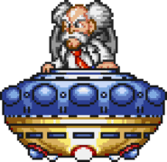

About Dr. Wily
Dr. Wily is the main villain of Mega Man 2 and the creator of the Robot Masters. After defeating all eight bosses, Mega Man must face Wily in his castle.
Final Battle
Wily uses multiple forms including his alien disguise. Each phase requires different strategies and careful timing.
How to Beat Him
Use Bubble Lead against his alien form. Learn his patterns and conserve weapon energy throughout the fight.